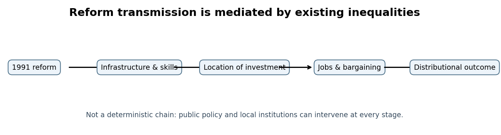
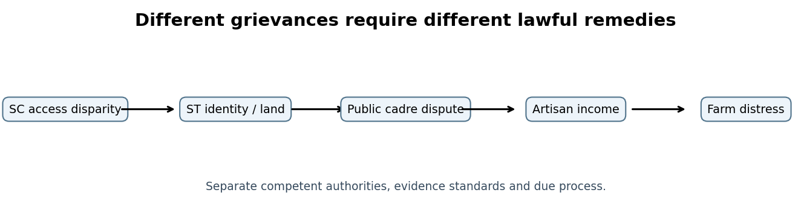
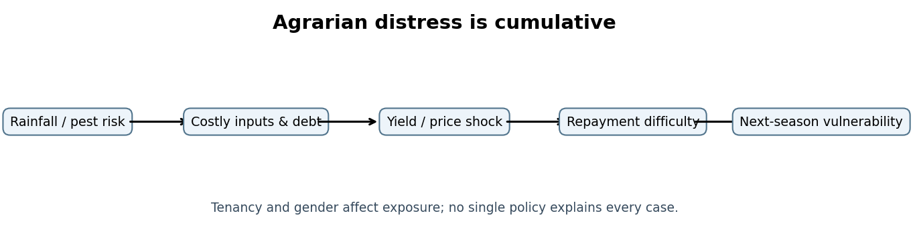

Paper VI · Unit II · Topic 4 — Liberalisation, Regional Inequalities, Social Justice Movements and Rural Crisis
TGPSC Group I Mains | Telangana Movement and State Formation | Original English study chapter | 25 October 2026 | Publication draft: independent academic review pending
Syllabus authentication. The commission-hosted original Group-I Notification No. 02/2024, dated 19 February 2024, has now been directly opened as a 50-page original PDF. Its Paper VI, Unit II, Item 4 reads: “Liberalization and Privatisation Policies in 1990’s and their consequences - Emergence of regional disparities and imbalances in political power, administration, education, employment – Madiga Dandora and Tudum Debba movement – Agrarian crisis and decline of Handicrafts in Telangana and its impact on Telangana Society and economy.” The wording is reproduced here to establish coverage, not to imply that the Commission endorses any explanatory interpretation below.
Provenance and caution. All MCQs, cases, diagrams and mains questions below are original study exercises, not verified official previous-year questions. The precise relationship between reforms and regional disadvantage is an empirical question: contemporaneous grievance, causal explanation and official administrative finding are different categories. The chapter does not infer that liberalisation alone caused every farmer death, every caste inequality or every weaving decline.
Syllabus-to-chapter map
| Syllabus element | Sections | Analytical task |
|---|---|---|
| Liberalisation and privatisation of 1990s | 1–8 | Identify instruments, timing, sectoral effects and competing interpretations |
| Regional political/administrative imbalances | 9–12 | Trace representation, budgets, jobs and safeguards |
| Education and employment inequalities | 13–15 | Distinguish access, quality, recruitment and migration |
| Madiga Dandora | 16–20 | Understand sub-classification, mobilisation, constitutional evolution |
| Tudum Debba | 21–24 | Adivasi representation, Scheduled Areas and intra-ST claims |
| Agrarian crisis | 25–31 | Credit, crop risk, markets, tenancy, gender and migration |
| Decline of handicrafts | 32–37 | Looms, wages, powerloom competition, design and markets |
| Integrated application | 38–40, appendices | Compare claims, build evidence and design remedies |
1. How to read the decade: economic reform did not begin or end in one year
The 1990s were a watershed in India's political economy because the Union government responded to a severe balance-of-payments crisis with stabilisation and structural reforms. The national turning point was 1991, but Telangana's regional history did not suddenly reset. Pre-existing inequalities in landholding, irrigation, public employment and cultural status shaped which households could exploit new opportunities. A graduate in Hyderabad with English-medium education could enter an expanding service sector, while a rainfed cotton farmer in northern Telangana confronted market price fluctuations without comparable insurance. Both experiences belong to the same historical period, but neither proves a uniform regional effect.
The syllabus also links reform to caste assertion and Adivasi mobilisation. This does not mean Madiga Dandora or Tudum Debba were merely by-products of privatisation. Their demands concerned historical exclusion, the distribution of constitutionally protected opportunities, tribal land and recognition. Economic change could alter the stakes of those claims, especially as secure public jobs became more valuable to households lacking private-sector networks. A strong mains answer therefore uses a layered explanation: inherited structural inequalities; policy change; institutional choices; local markets; collective mobilisation; and outcomes. Each link needs its own evidence.
2. What liberalisation, privatisation and globalisation actually mean
Liberalisation reduces specified state controls on economic activity, such as industrial licensing or restrictions on trade and investment. Privatisation concerns the transfer of ownership or management from public to private actors; opening a sector to private competitors is not necessarily a sale of an existing public enterprise. Globalisation denotes deeper cross-border connections in trade, capital, technology and production. The terms overlap but are not interchangeable. An exam question may ask whether deregulating entry into an industry automatically amounts to privatisation: it does not.
The 1991 New Industrial Policy reduced licensing requirements across many industries, modified public-sector reservation, and opened additional channels for foreign investment. Financial and trade changes unfolded over several years rather than as a single package implemented uniformly on 24 July. Agricultural marketing, irrigation, tenancy, state recruitment and welfare were governed by distinct institutions. Thus it is analytically wrong to describe the collapse of a local tank, or the cancellation of a teacher post, as a direct provision of the New Industrial Policy. Identify the relevant law, department, budget and decision before attributing responsibility.
3. The 1991 crisis and the objectives of the reform programme
By 1991 India faced acute external-payments pressure, dwindling foreign-exchange reserves and macroeconomic instability. Stabilisation aimed to restore external confidence and contain immediate financial risk; structural reforms aimed to increase productivity, competition, investment and the economy's ability to earn foreign exchange. Those aims should be distinguished from measured outcomes. A government can pursue efficiency yet fail to ensure fair distribution; conversely, market entry can improve consumer access and create jobs even where some existing producers lose protection.
For Telangana, the main transmission channels were demand for skilled urban labour, growth in services, new credit and technology opportunities, and stronger competition for small producers. A city with universities, infrastructure, public research establishments and business networks was better placed to attract investment than a village with poor roads and unreliable electricity. These advantages predated 1991. An analytically sound account separates selection—why investment went to an already advantaged place—from treatment—what the new investment changed after arrival. Without that distinction, correlation between reforms and Hyderabad's growth is mistaken for complete causation.
4. Industrial delicensing and its unequal geography
Industrial delicensing allowed many firms to invest without earlier layers of central permission, subject to remaining environmental, safety, land and sector-specific requirements. A firm still needed electricity, transport, skilled staff, finance and a functioning legal system. This helps explain why economic opening can increase concentration in a few cities: investors value networks of suppliers, customers and workers. Economists call these benefits agglomeration economies. They can produce real efficiency gains but also raise urban land prices and pull talent away from rural districts.
In Hyderabad, public-sector institutions, scientific research, transport links and an established educated workforce created a platform for later IT, pharmaceuticals and business services. In rural Telangana, the ability to respond depended on infrastructure, farm size, literacy and credit. A district's failure to attract a particular industry is not proof of deliberate exclusion, but persistent neglect of basic enabling conditions is a legitimate policy question. An administrator should map industrial investment against road connectivity, power reliability, training institutions, environmental burdens and local employment outcomes, rather than counting factories alone.
5. Trade openness: gains to consumers, pressure on producers
Lower barriers to imports and changes in exchange-rate policy can widen access to machinery, components and consumer goods. They also expose domestic producers to price and quality competition. The effect on a particular Telangana craft or crop depends on product differentiation, scale, productivity, transport cost and whether competing imports actually reached that market. Handwoven silk saris, low-cost synthetic fabric and industrial cotton yarn occupy different market segments; treating them as one commodity conceals the channels of pressure.
A weaver may benefit from improved access to dyes or designs while losing sales to cheaper machine-made cloth. A farmer may gain access to better inputs but face expensive proprietary seeds and uncertain output prices. These are distributional effects within sectors, not simply a binary contest between 'traditional' and 'modern'. Policy should preserve opportunities to innovate while addressing asymmetric bargaining power, product mislabelling, weak market information and exclusion from affordable credit. For evidence, compare producer prices, input costs, wages, order books and quality grades across time, adjusting nominal values for inflation.
6. Private investment, infrastructure and public responsibility
Private participation in infrastructure and services may mobilise capital, managerial capacity and technology. Yet infrastructure has public-good and natural-monopoly characteristics: a private water supplier or power distributor can affect people unable to choose an alternative. Contracts therefore require clear service standards, transparent tariffs, procurement oversight, dispute resolution and safeguards for poor consumers. A privately financed hospital may expand tertiary care but still leave remote primary healthcare underprovided. Investment totals alone do not measure access.
Telangana's historical grievances often concerned whether the state's public investment followed need or political influence. Economic reform did not eliminate government's responsibility for primary schools, preventive health, minor irrigation, land administration or equitable recruitment. Indeed, a more competitive economy can increase the value of these public foundations. The correct administrative response is not automatic opposition to private investment; it is a test of additionality, distribution, accountability and whether public obligations remain funded. Compare the counterfactual: what services would exist without the project, and who would be excluded under each model?
7. Labour markets after reforms: formal growth and informal risk
New service industries offered higher-paid work for some educated workers, especially where computer skills, English proficiency and urban networks were available. But employment creation did not necessarily match the number of rural jobseekers or replace lost artisanal livelihoods. Informal construction, transport, domestic work and small workshops absorbed many migrants without equivalent social security. This distinction between the number of jobs and the quality of jobs is crucial. A contract worker's nominal earnings may increase while income volatility, commuting expense and injury risk also rise.
Employment policy must consider recruitment rules in public services separately from private hiring. Article 371-D and the Presidential Order created a particular framework for local public employment; they do not by themselves mandate identical local hiring in every private firm. A good mains answer identifies the applicable legal instrument before alleging a violation. For private employment, evaluate training, placement, nondiscrimination, working conditions and the extent to which investment creates local supply chains. Gender matters: women may enter garment or service work but face unsafe travel, unpaid care burdens and limited promotion.
8. Why economic growth and development are not synonyms
Gross output can grow even when benefits accrue disproportionately to a small set of districts, sectors or asset owners. A rise in Hyderabad real-estate values may enrich landowners while increasing rents for informal workers. Per-capita income is an average, not a guarantee of household prosperity. Similarly, a village can receive more mobile connectivity without resolving land insecurity or access to drinking water. Development therefore requires a multidimensional test: income, education, health, environmental security, dignity and the ability to influence public decisions.
A contemporary comparison illustrates why regional averages need caution. Telangana's 2024–25 budget speech cited much higher per-capita income for Rangareddy than Vikarabad, but these are post-2014 district figures, not direct measurements of 1990s united Andhra Pradesh. They show the enduring policy relevance of unequal development, not the precise size of the historical gap. An examiner may reward this temporal discipline. Never project current district boundaries or today's sector shares backwards into the 1990s without constructing comparable historical series.

9. Political power and the distribution of development choices
Regional disparity has a political dimension when decisions over projects, cabinet portfolios, budgets or institutional locations appear disconnected from regional need. In united Andhra Pradesh, Telangana activists criticised the concentration of political and administrative influence and the uneven implementation of safeguards. However, measuring that imbalance requires a denominator: seats, population, departments, sanctioned posts, budget obligations and actual expenditure may tell different stories. A raw count of ministers without portfolios or time in office is incomplete.
A rigorous study would compare the regional origin of chief ministers and ministers, legislative representation, expenditure on major and minor irrigation, location of professional colleges, and the staffing of key departments. It would also examine inequalities within Telangana, where caste, gender, urban location and tribal status shaped access. Political claims should be attributed to movements when evidence is contested, and administrative findings identified by report and date. This avoids converting a movement's retrospective interpretation into a universal fact while taking grievances seriously enough to investigate.
10. Administrative imbalance: implementation matters more than declarations
The Six-Point Formula, Article 371-D and the 1975 Presidential Order were designed to address concerns about educational and public-employment opportunities. Subsequent employee representations, the Jayabharat Reddy Committee and G.O. 610 show that formal safeguards did not end disputes over implementation. The 1990s reform climate formed a backdrop, but the source of a particular service-rule violation must be traced through appointment orders, local-cadre rules, transfers, exemptions and the government's corrective action. An allegation is not the same as a judicial finding.
Consider a recruitment list in which posts reserved for a specified local cadre are filled through an incorrect classification. The proper audit would reconstruct the roster, identify the governing presidential order, verify service records and give affected employees a fair hearing. It should not assume guilt based on surname, language or place of birth. Telangana's regional justice debate is strongest when framed as rule-bound public administration: transparent data, reasoned orders, timely correction and equal treatment under law. This is also an excellent bridge to mains questions on governance and accountability.
11. Irrigation, geography and inherited development asymmetry
Large canal systems, tanks, groundwater and rainfed agriculture have different ecological and fiscal requirements. Much of Telangana's agriculture historically depended on rainfall, tanks and wells, so inadequate maintenance or expensive groundwater extraction could impose high risk on smallholders. The relevant comparison is not merely the number of named irrigation projects. Assess dependable water delivered, command-area coverage, seasonal variation, rehabilitation costs, farmer participation and environmental sustainability.
When activists argued that public expenditure favoured other regions, the claim could be tested through project-wise financial and physical progress, allocation versus utilisation and cost per acre served. But climate, topography and engineering feasibility also affect investment patterns. A careful answer considers both political prioritisation and technical constraints. The public-policy remedy combines transparent regional accounts with tank restoration, efficient groundwater use, equitable distribution and agricultural extension. It avoids treating every irrigation problem as a single interregional conspiracy or every project announcement as completed irrigation.
12. Urban–rural divergence within Telangana
Hyderabad's growth created a visible contrast with dryland villages in parts of Karimnagar, Adilabad, Warangal, Mahbubnagar and Nalgonda. New industries, universities and hospitals were often concentrated in or near the metropolitan economy. Rural households faced weaker transport links, lower access to specialised training and greater dependence on seasonal earnings. Migration to the city could be an opportunity, a coping strategy or both. The difference is visible in whether workers gained stable housing, education and bargaining power or remained trapped in insecure employment.
Do not portray all rural Telangana as economically stagnant. Irrigated pockets, market towns, horticulture, dairying, transport and small businesses developed unevenly. Equally, not all Hyderabad residents benefited from high-end growth; informal settlements and precarious workers were part of the city. A useful comparison follows a household across time: land access, debt, children's education, migration, remittances and healthcare. This shows how one region can generate rising aggregate income while reproducing vulnerability in both origin villages and destination neighbourhoods.
13. Educational access: seats, affordability and social background
Expansion of professional and private educational institutions can increase the number of seats and introduce new courses. Yet access depends on fees, entrance preparation, language, hostel availability, distance and the quality of prior schooling. Students from a rural government school may compete with urban students who have better coaching and digital resources. The resulting inequality is not adequately captured by a statewide count of engineering colleges. Examine completion rates, debt incurred for study, placement outcomes and the social composition of entrants.
Telangana activists linked educational imbalance to institutional location and the implementation of local admission rules. The 1975 Presidential Order is relevant to designated educational arrangements, but it should not be assumed to cover every new private institution identically. The correct analysis names the institution, the admission rule and the date. Equity-oriented measures include scholarships, residential facilities, school quality, language support and transparent admissions. The policy choice is not necessarily 'public versus private'; it is whether expanded capacity becomes meaningful opportunity for first-generation learners.
14. Employment disparities: public cadres versus market jobs
Public employment offers predictable pay, status and pension-related expectations that can be especially important for historically disadvantaged households. Disputes over local cadres therefore carried symbolic and material significance. In contrast, private-sector employment often depends on firm location, skills and market demand. These systems cannot be analysed with one undifferentiated employment percentage. A district with a high number of software vacancies may still have low local access if students lack relevant training or cannot afford relocation.
For examination answers, distinguish unemployment, underemployment and poor-quality employment. A farmer working only part of the year may not appear unemployed in a simple headcount yet have insufficient earnings. A degree-holder may accept informal work below their qualification. A weaver may be technically self-employed while receiving less than a sustainable wage. Use labour-force participation, regular-wage share, earnings, social protection and gender gaps as complementary measures. This makes the argument about regional imbalance more precise and administratively actionable.
15. How to evaluate regional discrimination without stereotyping
Regional identity should never become a proxy for individual culpability. Many people migrated across Andhra Pradesh for employment, marriage or education, and communities had varied political loyalties. The existence of structural disparity does not justify collective blame. An evidence-based enquiry asks whether rules were breached, public investments were inequitable, opportunities were inaccessible and complaints were addressed. It separates a policy's design from its implementation and recognises that social hierarchies also operated within each region.
A district-level dashboard should publish comparable historical data, the method used to harmonise changing boundaries and uncertainty ranges. It should track approved versus completed infrastructure, sanctioned versus filled posts, school quality and health outcomes, disaggregated where legally and ethically appropriate. The aim is not to erase the movement's grievances but to transform them into claims that can be tested and remedied. In a mains conclusion, frame regional justice as a commitment to transparent institutions, not an argument that one cultural community is intrinsically more deserving than another.
16. Madiga Dandora: the question of unequal benefit within a reserved category
The Madiga Dandora movement raised a specific social-justice question: if Scheduled Castes share a constitutionally recognised history of exclusion, can the benefits of reserved educational and employment opportunities nevertheless be concentrated among some constituent communities? Its organisers argued that Madigas and other underrepresented groups were not receiving a proportionate share. The claim should be analysed through historical disadvantage, educational attainment, recruitment records and the legal framework for Scheduled Caste recognition. The movement was not simply a demand to abolish reservation; it sought to change how benefits were distributed within it.
The issue is analytically distinct from the Telangana-versus-Andhra regional divide. Madiga Dandora mobilised across the then undivided state, including places outside present Telangana. This is an important correction to an overly narrow narrative. Dalit politics itself contained different perspectives: supporters of sub-classification emphasised unequal access, while opponents feared fragmentation or questioned the legal basis and available evidence. Both positions must be described accurately without depicting any Scheduled Caste community as uniformly privileged or uniformly represented by one organisation.
17. The MRPS and the 1994 mobilisation
The Madiga Reservation Porata Samithi (MRPS) emerged in July 1994, associated with Manda Krishna Madiga and other activists. Contemporary retrospective accounts locate its early organisation at Eedumudi in the then Prakasam district. The movement employed public meetings, rallies, negotiation and the cultural practice of dandora—an announcement through the dappu drum—to make an otherwise technical reservation issue visible in villages and cities. Its mobilisation linked access to state employment with the dignity of naming and self-identification.
Historical precision matters. The formation of MRPS should not be placed exclusively in Telangana simply because the movement became highly influential there. Nor should every later political claim about the precise share of benefits be repeated without underlying administrative data. The organisation's contribution can be assessed through agenda setting, sustained public mobilisation, legal debate and pressure for official commissions. An answer may discuss Manda Krishna Madiga as a leader while acknowledging collective leadership, local women's participation and allied activists, rather than reducing the movement to a single biography.
18. Why the dappu mattered as a political symbol
The dappu was not merely a musical accompaniment. In Madiga Dandora it helped turn a form of public announcement associated with marginalised labour into an instrument of collective assertion. The movement also encouraged reclamation of the name 'Madiga' in public identity. These choices confronted stigma and challenged the assumption that social mobility required silence about caste. Cultural performance could make complex questions of quotas, recruitment and legal recognition intelligible to audiences without access to official reports.
The political effectiveness of a symbol depends on organisation and institutional response. Drumming at a rally does not itself alter a reservation roster; it attracts attention, builds solidarity and raises the cost of ignoring a grievance. Examine the sequence from public mobilisation to commissions, legislation and litigation. In answer writing, connect culture to constitutional politics rather than treating it as a colourful anecdote. Also recognise that Dalit women and occupational subgroups may face distinct barriers not resolved by a change in category-wide allocation alone.
19. Sub-classification: the legal controversy and its historical stages
Andhra Pradesh enacted the Scheduled Castes (Rationalisation of Reservations) Act, 2000, an important primary document in the legal history of this debate. Its objective was to distribute reserved opportunities more equitably among constituent Scheduled Caste groups. Subsequent constitutional litigation constrained the state's approach; the Supreme Court's E. V. Chinnaiah decision in 2004 took a restrictive position on state sub-classification. The legal landscape changed substantially with the seven-judge Constitution Bench decision in State of Punjab v. Davinder Singh on 1 August 2024, which permitted sub-classification subject to constitutional limits and an evidence-based basis.
Do not collapse these different dates into one timeless legal rule. A 1994 activist did not possess a 2024 judgment, and a 2000 statute cannot be interpreted as if it was drafted after that judgment. Telangana subsequently enacted the Scheduled Castes (Rationalization of Reservations) Act, 2025 and issued implementing rules dated 14 April 2025. These are current-affairs follow-ups, not events of the 1990s. The principle to retain is that identification of Scheduled Castes under Article 341 and distribution of reservation benefits raise related but legally distinct questions. The precise boundaries of permissible sub-classification must be checked against the operative judgments and legislation.
20. Social justice within social justice: strengths and cautions
A strong argument for sub-classification is that aggregate reservation can mask internal inequality. If a few better-positioned groups capture most seats because of schooling, geography or network effects, formally equal eligibility may reproduce unequal outcomes. Supporters therefore seek evidence-based allocation that reaches severely excluded groups. A strong caution is that sub-classification without reliable data, transparent criteria and periodic review may entrench new labels or politicise distribution. There are also questions about the effect on overall SC solidarity and about whether reserved seats alone can correct poor primary education.
The administrative test is therefore procedural as well as distributive: publish the legal basis, methodology, data limitations, grievance process and monitoring indicators. Improve schooling and anti-discrimination enforcement alongside any lawful allocation reform. Avoid the false choice between recognising internal disadvantage and preserving a shared struggle against caste oppression. An examiner may ask for a balanced assessment; the best answer shows how dignity, evidence, constitutional legality and access to foundational services reinforce one another rather than substituting for one another.
21. Tudum Debba: Adivasi voice and recognition
Tudum Debba is associated with Adivasi mobilisation in northern Telangana, particularly around questions of tribal rights, recognition, representation and the distribution of benefits within the Scheduled Tribes category. The term evokes the tudum drum used in Adivasi public communication. Like Dandora, it illustrates how cultural symbols can support collective action, but the communities, legal categories and principal grievances are not identical. An examiner should never equate SC sub-classification and ST status disputes simply because both involve intra-category inequality.
The movement must be situated in the history of Adivasi land alienation, forest access, education, recruitment and the administration of Scheduled Areas. Some organisers have challenged the inclusion or relative access of Lambada/Banjara groups within the ST framework; these are contested political demands, not findings that a listed community is unlawfully classified. Only constitutionally prescribed processes can alter a Scheduled Tribes list. Historical accounts of the movement's exact founding date and early leadership are less securely documented in accessible primary records than the 1994 MRPS chronology, so this chapter avoids a fabricated precise date.
22. The Fifth Schedule and the legal architecture of tribal protection
Article 244(1) and the Fifth Schedule govern the administration of designated Scheduled Areas. Their purpose is not to remove residents from the Constitution's general protections but to provide additional institutional safeguards in regions with significant tribal populations. The Governor's responsibilities, Tribal Advisory Councils and the special legal position of Scheduled Areas are central. The Ministry of Tribal Affairs provides the official framework for designation and governance; changes to the notified list of Scheduled Areas follow constitutional procedures.
The Panchayats (Extension to Scheduled Areas) Act, 1996 (PESA) adds principles of local self-government in Scheduled Areas. It should not be confused with the Forest Rights Act, 2006, which addresses recognition of specified forest rights through a separate process. Neither law automatically resolves every boundary dispute, land-transfer violation or employment grievance. In a case about an Adivasi village, first establish whether the site is legally a Scheduled Area, which law applies, what the Gram Sabha's role is and whether records and consent procedures were followed. Rights claims require administrative implementation, not only slogans.
23. Land, forests and representation: overlapping Adivasi claims
Adivasi organisations have raised concerns about outsiders acquiring land, weak enforcement of transfer restrictions, forest access and competition for educational or public-service opportunities. These concerns can intersect but require different remedies. An illegal land transfer calls for record verification and restoration under applicable law; a disputed recruitment roster requires service-law scrutiny; a claim about ST inclusion engages Article 342 and parliamentary authority. Treating all three as one issue leads to legally defective recommendations.
Tudum Debba also shows why a movement's rhetoric and a government's lawful powers must be distinguished. A rally can demand deletion of a community from the ST list, but a district collector cannot unilaterally change the Presidential Order. Likewise, a community's grievance about unequal access must be examined without hostility toward other tribal groups. A good administrative response combines consultation, accurate data, enforcement of land protections, school and hostel access, and nonviolent dispute resolution. This is a better answer than repeating allegations as if they were adjudicated facts.
24. Comparing Madiga Dandora and Tudum Debba without false equivalence
Both movements used a culturally resonant drum, collective identity and mass mobilisation to challenge perceived exclusion. Yet Madiga Dandora principally focused on the distribution of benefits within Scheduled Caste reservations, while Tudum Debba encompassed Adivasi identity, ST-related representation and broader rights over land and local governance. Their geographical reach, chronology, leadership structures and legal frameworks differ. An exam comparison should begin with those differences, then discuss shared strategies such as public assembly, petitions, cultural assertion and demands for state accountability.
A misleading answer might say both simply demanded 'more reservation'. A better answer asks: more opportunity for whom, under which constitutional article, using what evidence and through which competent authority? It also identifies tensions between community-level representation and broader solidarity against discrimination. Neither movement is reducible to the 1991 reforms, although changing labour markets and education costs increased the significance of secure public opportunities. This analytical distinction earns more than a list of slogans.

25. Agrarian crisis: a chain of interacting risks
The agrarian crisis in parts of Telangana cannot be explained by one cause. Rainfall variability, declining tank maintenance, costly groundwater, small holdings, tenancy insecurity, input-price increases, volatile crop prices, informal credit and inadequate risk protection can reinforce each other. The chain often begins before harvest: a household borrows for seeds and fertiliser, rainfall disappoints, pest damage lowers yield, output prices weaken and the farmer rolls over debt at high interest. The next season then starts with less resilience. Distress is cumulative, not a single market event.
National reforms influenced some markets and input choices, but monsoon failure and local institutions remained decisive. A rigorous case study would reconstruct a farmer's crop budget rather than assert that 'globalisation caused debt'. Compare expected and realised yield, the farmgate price, cost of credit, tenancy terms and the timing of distress. Agricultural labourers may suffer through fewer workdays even without owning land or taking crop loans. Women frequently bear the burden of unpaid farm work, household borrowing and coping after migration. These distinct experiences must appear in an inclusive account.
26. Cotton cultivation and the cost–price squeeze
Cotton became emblematic of risk in several dryland districts because it can require significant expenditure on seeds, pesticides and labour before returns are known. Pest incidence, quality variation and uncertain procurement or market prices can create a cost–price squeeze. In the 1990s, changes in input markets and agricultural advice interacted with weather and farmer decisions. The exact chronology of genetically modified Bt cotton is important: commercial approval in India came in 2002, so Bt cotton must not be presented as a general feature of the early 1990s.
A cotton farmer's net income equals realised output revenue minus the full cost of cultivation, including family labour and financing. A high gross price does not imply profitability when yields are low or credit expensive. Agricultural extension should provide locally tested pest management, seed-quality enforcement, weather information and diversified cropping advice. Historical analysis should avoid sensational or unverified farmer-suicide counts; credible data require defined geography, period and official or independently documented methodology. Distress is real even when a precise statistic is unavailable.
27. Informal credit, indebtedness and the limits of banking access
Formal bank lending can reduce the cost of credit, but collateral, land titles, branch access and loan timing often exclude tenant farmers and landless cultivators. Informal lenders may offer immediate funds yet charge high rates or tie credit to crop sales. The problem is not only the interest rate: a delayed formal loan can arrive after the sowing window, forcing a household into expensive emergency borrowing. Market reforms did not automatically create universal rural financial inclusion.
A district administration should separate crop loans, consumption debt, health-related borrowing and trader advances when designing remedies. Loan waivers may relieve eligible borrowers temporarily but can miss informal debt and tenants without recorded ownership. Sustainable risk reduction needs reliable irrigation, crop insurance where feasible, quality extension, transparent marketing and accessible credit. An exam answer should distinguish an emergency response from structural prevention. It should also acknowledge that borrowers and lenders face different incentives and that poorly designed subsidies can create exclusion or fiscal strain.

28. Tenancy, land records and invisible cultivators
Where the recorded landowner is not the actual cultivator, benefits linked to ownership can miss the person bearing crop risk. Sharecroppers, oral tenants and women cultivating family land may struggle to prove eligibility for loans, compensation or insurance. The exact prevalence of tenancy varies by district and period, and oral arrangements are difficult to measure. The important analytical point is institutional invisibility: policy designed around a formal record can overlook real economic relationships.
An administrator should not solve the problem by casually changing property ownership records. Instead, lawful cultivation recognition, confidential grievance channels, clear eligibility rules and safeguards against eviction can improve access while respecting property rights. The land question also connects agrarian distress to caste and Adivasi exclusion. A farmer without secure tenure is less likely to invest in soil improvement and may face a higher effective cost of capital. A comprehensive historical account therefore treats agrarian crisis as a question of institutions and social power, not merely low rainfall.
29. Water stress, tanks and groundwater extraction
Tank irrigation was historically important in Telangana's semi-arid landscape. When maintenance weakens, silt accumulates, catchments are obstructed or water distribution becomes unequal, small cultivators may turn to wells. Groundwater extraction can initially raise yields but expose farmers to drilling costs, pump failure and declining water tables. A household that borrows repeatedly to deepen a borewell faces a distinctive debt pathway. Electricity availability affects pumping, yet free or subsidised power without aquifer management can intensify overuse.
The policy answer must operate at watershed scale: protect catchments, restore tanks where hydrologically viable, measure groundwater trends, encourage crop choices suited to rainfall and create water-user institutions. A canal project and a restored village tank serve different ecological and social roles; neither should be evaluated by expenditure alone. In a mains answer, link the agrarian crisis to the historical Telangana movement through perceived uneven irrigation investment, but do not substitute perception for a project-wise audit. The most persuasive argument joins social grievance with measurable water delivery.
30. Rural migration: distress, aspiration and remittance
Migration from rural Telangana to Hyderabad, other Indian cities or overseas destinations could be a response to crop failure, a search for education or an entrepreneurial choice. It is inaccurate to assume every migrant was forced out by agrarian collapse. At the same time, the absence of viable local work can turn migration into a survival strategy. Construction and informal services may offer cash wages but involve dangerous worksites, irregular payment, insecure housing and disrupted schooling for children.
The sending village and destination city are linked economically. Remittances may finance consumption, debt repayment and children's education; loss of working-age adults may increase women's unpaid responsibilities and leave older people without care. Evaluate migration through net earnings after travel and living costs, job safety, school continuity and access to identity documents. A district-level intervention should combine livelihood diversification with portability of welfare and labour protections. A movement-era essay can use migration as evidence of uneven development only when supported by historical data, not merely as an emotional image.
31. Agricultural responses: diversification, insurance and public goods
There is no single crop or subsidy that can remove agrarian risk. Diversification toward millets, pulses, livestock or horticulture may reduce dependence on one volatile market, but each alternative has its own water, perishability and marketing constraints. Farmer producer organisations can improve bargaining power where they are democratically managed and financially sound. Insurance can transfer specified risks, but only if coverage, loss assessment and claims settlement are credible. Public investment in roads, storage, irrigation and extension remains indispensable.
Policy sequencing matters. Advising a heavily indebted tenant to shift crops without credit or market access can worsen vulnerability. A practical district plan begins with crop-budget data, village-level water accounts, access to quality inputs and a transparent list of eligible households. It then prioritises the most severe risks and measures outcomes over several seasons. This approach recognises farmers as economic decision-makers rather than passive victims. It also avoids romanticising subsistence agriculture or assuming that unregulated markets automatically deliver fair farmgate prices.
32. Handicrafts in Telangana: diversity behind a single syllabus phrase
'Handicrafts' includes more than handloom weaving. Telangana's artisanal economy encompasses Pochampally ikat, Gadwal and Narayanpet textiles, Warangal durries, metalwork, woodwork, leather and other locally specialised production. Each has distinct input chains, labour skills, caste histories, market segments and design traditions. A claim that handicrafts declined must therefore specify whether it means fewer working artisans, lower real wages, loss of a technique, reduced market share or closure of particular workshops. Some traditions adapted and reached premium markets even as many producers struggled.
Artisans often combine household labour with piece-rate contracts, making income hard to observe. A rise in retail prices for a branded sari may not reach the loom worker when traders control credit, raw materials and distribution. Women's preparatory labour—winding, dyeing assistance, finishing and marketing—may be undercounted. A serious historical account looks at the full value chain and distinguishes the survival of a craft label from the welfare of its practitioners. The existence of a celebrated geographical indication does not guarantee living wages for every artisan.
33. Handloom versus powerloom: technology and market segmentation
Powerlooms can produce fabric faster and at lower unit cost for many standardised products. Handlooms retain advantages in certain designs, textures and cultural markets but often face higher labour requirements and irregular orders. This is not simply a moral contest between machines and tradition. Technology can lower consumer prices and create jobs while displacing specific forms of skilled work. The relevant question is how producers adapt, whether product claims are honest and how the transition costs are distributed.
Policy can protect genuine handloom identity through standards, labelling and enforcement against misrepresentation. It can also fund design innovation, training and modern dyeing facilities without eliminating the handmade process that gives a product its value. Subsidising unsold production indefinitely is not a substitute for understanding demand. Conversely, exposing poorly financed cooperatives to unlimited competition without transition support may destroy accumulated skills. A balanced answer evaluates both productivity and cultural heritage, with artisans' income as a central outcome.
34. Pochampally ikat, Gadwal, Narayanpet and Warangal durries
Pochampally ikat relies on resist-dyeing yarn before weaving, requiring precision in pattern alignment. Gadwal saris are associated with distinctive body–border techniques; Narayanpet textiles have their own regional aesthetic and production networks. Warangal durries represent another craft tradition with different materials and customers. These are useful Telangana examples because they demonstrate that 'handloom' is not a single technology or price category. Historical industrial change could affect each cluster differently through yarn cost, transport, intermediaries and consumer taste.
When writing a mains answer, connect a named cluster to an economic mechanism rather than merely listing craft names. For example, a Pochampally producer selling through a trader may face low bargaining power even if metropolitan demand for ikat grows. A Gadwal household may depend on skilled weaving labour but struggle with working capital. A Warangal durrie cooperative may need stable institutional orders. Avoid unverified claims that all these crafts were extinguished in the 1990s; their continued existence makes that formulation demonstrably misleading.
35. Credit, cooperatives and the handloom value chain
A handloom cooperative can aggregate orders, purchase yarn, coordinate quality and market finished products. But cooperative status alone does not guarantee democratic control or timely payments. Problems arise when management is weak, inventories accumulate, working capital is delayed or a few intermediaries dominate procurement. Artisans may then return to master-weaver arrangements that provide immediate raw materials but limit their bargaining power. Effective policy requires both financial discipline and representation of the people who actually weave.
A practical audit follows money from customer to retail outlet, wholesaler, cooperative, master weaver and household worker. It records who bears unsold-inventory risk, who owns the design, how wages are set and whether women workers are recognised. Better market access may come through exhibitions, government procurement, digital catalogues and export channels, but each needs quality assurance and prompt settlement. The Telangana handloom department's current records show ongoing cooperatives and working looms; such contemporary figures demonstrate institutional continuity, not a precise count for the 1990s.
36. Global markets: threat, opportunity and the authenticity problem
International trade can create niche demand for distinctive craft products, yet exporters may impose quality, volume and delivery standards difficult for small workshops to meet. A producer who gains access to a premium market may earn more; another may lose orders to factory imitations. The direction of change depends on design, certification, logistics, bargaining power and currency movements. 'Globalisation destroyed handicrafts' is too sweeping, just as 'exports saved handicrafts' ignores excluded producers.
Authenticity requires more than a label. Buyers need reliable information about materials, technique and origin, while artisans need enforceable contracts and fair payment. Counterfeit or misleading 'handloom' claims can undermine the price premium earned by genuine labour. Public agencies can support traceability, design registration, cluster facilities and marketing skills. They should also measure the distribution of income within the cluster. A craft may become famous while its workers remain poor; the difference between cultural recognition and economic empowerment is an important Telangana movement theme.
37. Cultural decline, social dignity and intergenerational skill loss
Craft production carries knowledge transmitted through families, apprenticeships and community institutions. When earnings fall, younger people may leave the occupation, sometimes improving their individual prospects but reducing the continuity of specialised skills. This should not be romanticised as an obligation to remain in low-paid hereditary work. Freedom to choose another livelihood is a development gain. The policy challenge is to make skilled craft a viable option rather than a caste-bound compulsion.
The loss of artisanal work can affect household bargaining, social festivals, local markets and regional identity. Yet cultural revival programmes must include living wages, occupational health, safer dyes, education and social protection. Exhibitions that celebrate an artisan's product without improving payment may reproduce inequality under a heritage label. A strong conclusion links culture to citizenship: communities should be able to preserve valued knowledge while accessing modern education, technology and alternative employment. That dual commitment is more defensible than nostalgia for a supposedly harmonious past.
38. Integrated interpretation: how the syllabus themes connect
The four principal strands—economic reform, regional inequality, caste and Adivasi assertion, and rural livelihood distress—intersect through unequal capacity to access opportunity. Households with land, schooling, finance and urban networks could benefit disproportionately from new markets. Groups facing historical discrimination demanded more effective access to protected public opportunities. Farmers and artisans exposed to climatic or market risk sought affordable credit, fair procurement and institutional recognition. These patterns help explain why debates over Telangana's development intensified even when some aggregate indicators improved.
But the strands retain distinct causes. The Madiga Dandora movement was not a campaign against all private enterprise; Tudum Debba was not simply a handloom union; drought is not caused by a reservation roster. Good history respects difference while identifying common structures of exclusion. The movement for a separate Telangana later drew on some of these grievances, yet participants did not share one uniform political ideology. An exam answer should reconstruct their convergence without rewriting the 1990s as an inevitable march to the 2014 state formation.
39. Competing interpretations and evidence standards
A pro-reform interpretation emphasises efficiency, competition, new technology, investment and employment; a critical interpretation stresses unequal bargaining power, insecure work and concentration of growth. Neither is sufficient without sector-specific evidence. A pro-sub-classification interpretation emphasises internal disparities in reserved benefits; critics emphasise constitutional design, data quality and solidarity. Adivasi movements similarly combine claims about identity, land and access, but their positions on other ST communities can be contested. Historians should report these disagreements fairly rather than substitute moral certainty for proof.
Evidence can be ranked by purpose. A signed statute establishes a legal rule, not its successful implementation. A government budget records proposed allocations, not necessarily completed works. A newspaper report documents a public claim, not necessarily the claim's accuracy. A movement memoir reveals participants' interpretation but may be retrospective. A household survey can estimate conditions if sampling and categories are sound. The best answers triangulate sources and state what cannot be inferred. Avoid invented casualty, suicide, recruitment or loom-closure figures when the underlying historical series is absent.
40. What a district administrator should do with this history
An administrator confronted with simultaneous complaints about farm debt, craft unemployment, local recruitment and discrimination should not announce one omnibus solution. Each grievance requires a different legal and evidentiary route. Begin with a participatory diagnosis: affected groups, dates, relevant rules, historical baseline and the immediate harm. Separate emergency relief from structural reforms. Publish a time-bound grievance register and protect complainants against retaliation. Where caste or tribal rights are involved, ensure accessible language, legal assistance and representation of women and marginalised hamlets.
Then build a public dashboard: crop-loss claims resolved, credit access by actual cultivator, timely payments to weavers, educational progression, lawful recruitment compliance and restoration of tribal land where ordered. Use independent audit and appeals. Private investors can be partners where contracts include enforceable social obligations; public authorities retain responsibility for equality and due process. The historical lesson is not that one region or one economic model was uniformly virtuous. It is that growth without accountable institutions can coexist with deep exclusion, and identity-based movements often expose failures hidden by aggregate statistics.
Applied Telangana administrative case studies
Case A — Cotton farmer and the invisible tenant
A tenant cultivator in an old Warangal-area village borrowed for cotton inputs but lacks a recorded tenancy document. A dry spell and pest damage reduce yield; a relief programme tied to ownership records excludes the cultivator. The correct response is not to falsify land ownership. Verify crop loss, assess the lawful eligibility rules, provide emergency assistance where authorised, enable transparent cultivation verification, and create an appeal route. A policy review should examine whether owner-only eligibility systematically excludes those bearing production risk. Evaluate both immediate debt distress and the next season's risk, including access to water and extension.
Case B — A handloom cluster with rising sales but falling wages
Retail demand for an ikat product increases, yet household weavers report stagnant piece rates. An audit maps the chain from customer to trader, cooperative, master weaver and artisan, distinguishing raw-material cost from value added. The administrator can facilitate price transparency, enforce lawful contracts, support working capital and encourage direct marketing without assuming every intermediary is exploitative. A policy is successful only if real artisan earnings and payment timeliness improve, not merely if the number of exhibitions rises. Women doing preparatory work must be counted.
Case C — Recruitment complaint invoking local-cadre safeguards
Applicants allege that a public department has treated local-cadre vacancies as open to ineligible transfers. The collector or competent department should identify the precise presidential order and service rules, obtain appointment records, audit rosters and provide notice to affected employees. Neither surname nor spoken dialect proves eligibility. If a violation is found, remedies must follow lawful procedures and protect due process. Publication of anonymised compliance statistics can rebuild confidence without inflaming regional hostility.
Case D — Dandora petition on unequal educational access
A community organisation argues that reserved professional-college seats are repeatedly secured by better-positioned subgroups. Officials should not dismiss the concern or improvise an unlawful quota. They should check current legislation, collect legally permissible disaggregated data, examine school preparation and admissions barriers, and provide an appeal process. Any allocation must conform to operative constitutional rulings and statutory rules. Parallel investments in scholarships, hostels and foundational schooling prevent the debate from becoming solely a competition for scarce seats.
Case E — Tudum Debba protest and Scheduled Area land transfer
An Adivasi village reports that agricultural land has been transferred contrary to Scheduled Area protections. Officials must first verify notified Scheduled Area status, land records and the applicable transfer regulation, then ensure notice, hearings and lawful restoration where warranted. Community consultation should respect the Gram Sabha's role under applicable law. A separate demand concerning inclusion of another community in the ST list cannot be resolved by the collector and must not justify threats or discrimination. Keep the two legal questions separate.
Case F — A development project and unequal local benefit
A new industrial park promises jobs near a Telangana market town but may displace common grazing land and increase rents. Appraisal should compare projected and realised local employment, training access, land compensation, environmental safeguards and fiscal costs. Consult affected households, especially landless users of commons who may be absent from title records. Build transparent contract obligations and independent monitoring. The question is not whether private investment is inherently harmful; it is whether its benefits are additional, fairly distributed and enforceable.
Standalone quick revision
Chronology. 1991 balance-of-payments crisis and industrial-policy reforms; July 1994 MRPS emergence and Madiga Dandora mobilisation; 1996 PESA; 2000 Andhra Pradesh SC Rationalisation Act; 2002 commercial approval of Bt cotton; 2004 E. V. Chinnaiah; 2014 Telangana state formation; 1 August 2024 Davinder Singh Constitution Bench decision; 14 April 2025 Telangana SC rationalisation rules. These are different legal and historical moments.
Core distinctions. Liberalisation ≠ sale of a public enterprise. Aggregate growth ≠ equitable development. Public-cadre recruitment ≠ private hiring. A Scheduled Area land dispute ≠ a challenge to the national ST list. SC sub-classification ≠ creation of a new Scheduled Caste. Craft popularity ≠ artisan prosperity. A farmer's gross crop revenue ≠ net income. A protest allegation ≠ a judicial finding.
Telangana examples. Hyderabad's services and industrial concentration; dryland cotton and groundwater risk in north Telangana; Pochampally ikat, Gadwal and Narayanpet textiles and Warangal durries; Madiga Dandora's dappu symbolism; Tudum Debba's Adivasi assertions; regional employment-safeguard debates. Use historical district boundaries when comparing 1990s data.
Answer framework. Start with the policy and inherited structure, identify a transmission mechanism, give a Telangana example, acknowledge a counter-interpretation, specify a primary source and close with a lawful administrative remedy. Avoid unsupported precise statistics or claims of universal causation.
Source register and evidence audit
The entries below distinguish primary law or government publication from retrospective and journalistic accounts. Access checked on 25 October 2026; where a primary historical dataset is missing, the gap is explicitly recorded. No student-facing page-number references are required.
- 19 February 2024 — TGPSC Notification No. 02/2024, Group-I Services, Annexure-II, Paper VI, Unit II, Item 4. Original 50-page commission-hosted PDF opened and wording verified. https://websitenew.tgpsc.gov.in/preview/RElSRUNUUkVDUlVJVE1FTlROT1RJL05PVElGSUNBVElPTl9OT18wMi0yMDI0X0dyb3VwLUlfU2VydmljZXMgKDEpMjAyNDAyMjAxNDA3MzcucGRmr95v17a0y2d8i13v
- 1991–92 — Union Budget historical archive. Official Ministry of Finance index confirms availability of 1991–92 documents; this run did not re-extract the entire 1991 speech. https://www.indiabudget.gov.in/hprevious_union_budget.php
- 2 May 2000 — Andhra Pradesh Scheduled Castes (Rationalisation of Reservations) Act, 2000. Original statute hosted on India Code; relevant to the historical sub-classification dispute. https://www.indiacode.nic.in/bitstream/123456789/15886/1/act_no_20_of_2000.pdf
- 1 August 2024 — State of Punjab v. Davinder Singh. Supreme Court-hosted Constitution Bench judgment located; direct full-document retrieval was intermittently unsuccessful, so this chapter does not assert unverified paragraph-level holdings. https://api.sci.gov.in/supremecourt/2010/25536/25536_2010_1_1501_54462_Judgement_01-Aug-2024.pdf
- 14 April 2025 — Telangana Scheduled Castes (Rationalization of Reservations) Rules, 2025, G.O.Ms.No.10. Government-hosted notification in KNRUHS admissions document; confirms implementing rules and the 2025 Act. https://www.knruhs.telangana.gov.in/uploads/20250716120025KNRUHS%20-%20MBBS%20BDS%20ADMISSIONS%20UNDER%20COMPETENT%20AUTHORITY%20QUOTA%20FOR%20THE%20AY%202025-26%20-%20RELEVANT%20GOs%20ON%20ADMISSIONS%20AND%20SC%20RATIONALIZATION%20OF%20RESERVATIONS%20GO.pdf
- 2025 — President of India, Padma award citation for Manda Krishna Madiga. Government-hosted institutional account confirms MRPS emergence in 1994 and the movement's symbolism; retrospective, not contemporaneous minutes. https://presidentofindia.nic.in/sites/default/files/2023-06/padma_2nd_3.pdf
- 1996 — PESA and Scheduled Area governance. Ministry of Tribal Affairs legal compendium explains the Fifth Schedule and PESA framework. https://tribal.nic.in/FRA/data/LandandGovernanceunderFifthSchedule.pdf
- Government of India, Ministry of Tribal Affairs — Fifth Schedule information. Official summary of declaration and governance of Scheduled Areas. https://tribal.nic.in/Clm.aspx
- 25 July 2024 — Telangana Socio-Economic Outlook 2024. Official state publication, suitable for contemporary comparisons, not a direct 1990s historical series. https://www.telangana.gov.in/news/2024/07/socio-economic-outlook-2024/
- 25 July 2024 — Telangana Budget 2024–25 presentation. Government publication documents contemporary district income disparities, agricultural vulnerability and handloom policy. Partisan claims are not treated as neutral adjudicated facts. https://www.telangana.gov.in/news/press-releases/2024/07/deputy-cm-presents-budget-for-the-year-2024-25/
- 2026 access — Telangana Handlooms and Textiles Department. Current administrative description of looms, cooperatives and schemes; cannot be backcast into 1990s counts. https://handtex.telangana.gov.in/
- 2024–25 — KLB Indian Institute of Handloom Technology. Official institutional history confirms establishment in 2024, relevant to present policy responses, not the 1990s. https://klbiiht.telangana.gov.in/about.html
- 2 August 2024 — New Indian Express retrospective on MRPS origins. Secondary historical account of Eedumudi, July 1994 and leadership; contemporaneous founding minutes not obtained. https://www.newindianexpress.com/states/andhra-pradesh/2024/Aug/02/madiga-movement-has-its-roots-in-prakasam-district-andhra
- 2018–2025 — Tudum Debba public demands. Later journalistic accounts document current activism, not a verified precise founding date or 1990s organisational register. https://www.thenewsminute.com/telangana/adivasis-declare-self-rule-tribal-dominated-areas-telangana-82295
Evidence not obtained: Original 1990s district-wise industrial investment and recruitment datasets on harmonised boundaries; certified farmer-distress and craft-closure historical series; contemporaneous Tudum Debba founding records; complete MRPS founding minutes; district-level budget expenditure reconciliation. Academic approval is withheld until these and other disputed claims are independently reviewed.
Closing synthesis
The 1990s brought new economic opportunities but exposed uneven capacities to use them. Telangana's regional grievances, Madiga and Adivasi assertions, agrarian insecurity and artisan distress cannot be compressed into a single cause. They reveal overlapping questions about investment, social justice, constitutional rights and administrative accountability. A strong answer combines precise dates, distinct legal frameworks, named Telangana examples and an evidence-based remedy rather than treating political slogans as substitutes for historical analysis.
30 original explained MCQs — not official PYQs
Q1. Which policy change most directly exemplifies industrial liberalisation?
A. Reduction of licensing requirements for many industries
B. Transfer of every public hospital to a company
C. Automatic abolition of all land records
D. Creation of a universal farm loan waiver
Answer: A. Explanation: The 1991 industrial policy reduced licensing for many sectors; the other choices are unrelated or false.
Q2. Privatisation is best distinguished from liberalisation because it concerns:
A. Abolition of village panchayats
B. Ownership or management moving from public to private hands
C. Only reductions in import tariffs
D. Only changes in farmgate prices
Answer: B. Explanation: Market entry can be liberalised without selling an existing public enterprise.
Q3. Which explanation best accounts for investment concentration in Hyderabad?
A. All Telangana villages had identical infrastructure
B. Investors had no need for skilled labour
C. Existing institutions, networks and urban services created agglomeration benefits
D. Every private firm was legally required to locate there
Answer: C. Explanation: Agglomeration economies build on pre-existing infrastructure, workers and supplier networks.
Q4. A high district per-capita income proves that:
A. All households in the district are equally prosperous
B. No poor households remain
C. Regional investment was historically fair
D. None of these claims necessarily follows
Answer: D. Explanation: Averages conceal intra-district inequality and cannot establish distribution or historical causation.
Q5. Which data best test a claim of regional public-employment safeguard violation?
A. Appointments, rosters, cadre rules and transfer orders
B. Only the number of political rallies
C. A list of popular surnames
D. A newspaper editorial alone
Answer: A. Explanation: A rule-specific administrative audit needs documentary recruitment and cadre evidence.
Q6. Which of these is not a reliable method of comparing 1990s regional development?
A. Harmonising old district boundaries
B. Comparing allocation and actual expenditure
C. Applying today's district totals directly to 1992
D. Examining physical project completion
Answer: C. Explanation: District boundaries and administrative categories have changed; present figures cannot be backcast unchanged.
Q7. Madiga Dandora chiefly demanded:
A. Abolition of all Scheduled Caste protections
B. Fairer distribution of reservation benefits within Scheduled Castes
C. A separate national currency
D. Elimination of village schools
Answer: B. Explanation: The movement challenged perceived unequal access among constituent SC groups.
Q8. The Madiga Reservation Porata Samithi is associated with which year?
A. 1956
B. 1969
C. 1982
D. 1994
Answer: D. Explanation: The movement was established in 1994; do not confuse its date with later legislation or litigation.
Q9. Which public symbol was central to Madiga Dandora mobilisation?
A. Dappu drum and public announcement
B. An industrial licensing certificate
C. A canal gauge
D. A forest clearance permit
Answer: A. Explanation: Dandora transformed a traditional announcement practice into a public assertion of dignity.
Q10. The Andhra Pradesh Scheduled Castes Rationalisation Act is dated:
A. 1975
B. 1985
C. 2000
D. 2014
Answer: C. Explanation: The 2000 statute belongs to the historical legal dispute; later judgments changed the constitutional landscape.
Q11. Which judgment changed the law on SC sub-classification in 2024?
A. Kesavananda Bharati
B. State of Punjab v. Davinder Singh
C. Minerva Mills
D. S. R. Bommai
Answer: B. Explanation: The seven-judge decision of 1 August 2024 permitted evidence-based sub-classification within constitutional limits.
Q12. Why must 2025 Telangana SC rationalisation rules be dated separately from the 1994 movement?
A. They were passed before independence
B. They are unrelated to law
C. They applied in the Nizam era
D. They are a later policy response, not a 1990s event
Answer: D. Explanation: Chronology prevents projecting subsequent legislation backward into earlier mobilisation.
Q13. Tudum Debba is best associated with:
A. Adivasi rights, identity and representation
B. Only textile exports
C. Only foreign exchange reserves
D. A public bank merger
Answer: A. Explanation: The organisation is linked to tribal representation, land and local-governance grievances.
Q14. Which constitutional provision underlies Scheduled Area administration?
A. Article 19 alone
B. Article 368 alone
C. Article 244(1) and the Fifth Schedule
D. Article 123 alone
Answer: C. Explanation: Scheduled Areas under the Fifth Schedule have a special constitutional administrative framework.
Q15. PESA was enacted in:
A. 1950
B. 1996
C. 2006
D. 2025
Answer: B. Explanation: The Panchayats (Extension to Scheduled Areas) Act dates to 1996; FRA is a separate 2006 statute.
Q16. Who can alter the constitutional Scheduled Tribes list through the prescribed process?
A. A district revenue inspector
B. A village cooperative
C. A private college
D. Parliament under the constitutional framework
Answer: D. Explanation: A local administrator cannot remove a community from the Article 342 list by executive order.
Q17. A tribal land-transfer complaint should first establish:
A. Scheduled Area status and applicable transfer law
B. The complainant’s preferred party
C. The market value of a Hyderabad apartment
D. The district cricket results
Answer: A. Explanation: Jurisdiction and applicable law determine lawful investigation and restoration.
Q18. Which factor is least defensible as a universal explanation of Telangana agrarian distress?
A. Rainfall risk
B. Credit cost
C. One policy alone causing every case
D. Tenancy insecurity
Answer: C. Explanation: Agrarian crises are multicausal and vary by crop, location and household.
Q19. Commercial approval of Bt cotton in India came in:
A. 1991
B. 2002
C. 1973
D. 1980
Answer: B. Explanation: Commercial approval was in 2002; attributing early-1990s distress to widespread Bt cotton use is anachronistic.
Q20. For a cotton farmer, the most relevant profitability measure is:
A. Gross output value alone
B. Quantity of pesticide purchased
C. Market-town population
D. Realised revenue minus full cultivation and financing costs
Answer: D. Explanation: Net income accounts for costs and is more informative than a headline output price.
Q21. Why can owner-linked farm relief exclude actual cultivators?
A. Oral tenants may lack recorded eligibility
B. Rain never varies
C. Banks never lend to farmers
D. All farms are mechanised
Answer: A. Explanation: Tenancy and land-record mismatch can make real risk bearers invisible.
Q22. Which response addresses groundwater-linked debt more structurally?
A. Subsidise deeper wells without monitoring
B. Ban all crops permanently
C. Watershed management, tank maintenance and crop-risk advice
D. Replace all credit with informal loans
Answer: C. Explanation: A sustainable response addresses hydrology and incentives, not only short-term drilling finance.
Q23. Which statement about rural migration is most accurate?
A. It always proves involuntary displacement
B. It may reflect both opportunity and distress
C. It always improves schooling
D. It eliminates household debt automatically
Answer: B. Explanation: Motives and outcomes vary; net earnings, safety and family effects must be measured.
Q24. Pochampally is particularly associated with:
A. Steel smelting
B. Diamond cutting
C. Oil refining
D. Ikat resist-dyed textiles
Answer: D. Explanation: Pochampally ikat is a named Telangana craft cluster with a distinctive production technique.
Q25. A high retail price for a handloom sari proves:
A. Nothing definite about the weaver’s share without value-chain evidence
B. Every weaver receives a high wage
C. There are no traders
D. Production cost is zero
Answer: A. Explanation: Value added may accrue unevenly across traders, cooperatives and workers.
Q26. Which of the following is a sensible response to handloom mislabelling?
A. Ban every machine-made textile
B. Remove all product descriptions
C. Traceability and honest product standards
D. Treat every loom as identical
Answer: C. Explanation: Accurate labelling protects consumers and the genuine handmade price premium.
Q27. Why is the 'decline of handicrafts' claim analytically incomplete without definition?
A. Crafts have no economic role
B. It may refer to jobs, real wages, skills or market share
C. Every artisan left the trade
D. All crafts disappeared by 2000
Answer: B. Explanation: Different measures can move in different directions and need separate evidence.
Q28. What is a sound comparison of Madiga Dandora and Tudum Debba?
A. They have identical legal demands
B. They are both solely farm unions
C. Both started on the same day
D. Both use cultural assertion, but involve distinct SC and ST frameworks
Answer: D. Explanation: Shared mobilisation strategies do not erase differences in legal category, demands and history.
Q29. Which document is strongest evidence of a legal rule but not of its implementation?
A. An enacted statute
B. A campaign slogan
C. A rumour
D. An unverified social-media post
Answer: A. Explanation: A statute proves the rule exists; service records and outcomes are needed to test implementation.
Q30. A well-designed development appraisal should prioritise:
A. Only announced investment value
B. Only the number of publicity events
C. Actual local access, costs, safeguards and measured outcomes
D. Only the project’s inauguration date
Answer: C. Explanation: Equity and additionality require realised outcomes and enforceable safeguards, not publicity totals.
Six original structured mains questions and complete model answers
Mains 1. Assess how the 1991 economic reforms interacted with pre-existing regional disparities in Telangana.
Background. India's 1991 reforms addressed a balance-of-payments crisis and sought to improve investment, competition and productivity. They entered a region already divided by unequal irrigation, education, transport and access to political institutions.
Economic transmission. Industrial delicensing and growing service markets favoured locations with skilled labour, infrastructure and supplier networks. Hyderabad could attract investment partly because it possessed such assets before liberalisation. Rainfed villages lacked comparable foundations. Yet market access also offered benefits: new employment, better technology and consumer choice. The effects were therefore sectoral and uneven rather than uniformly harmful.
Regional mechanism. Urban landowners and qualified workers could gain while informal migrants faced high rents and precarious work. Farmers and artisans encountered cost, price and credit pressures that depended on local institutions as much as national policy. Public investment choices, service-rule compliance and school quality remained responsibilities of government.
Evidence and counterview. A fair assessment compares district investment, actual expenditure, job quality, irrigation delivery and household incomes on consistent historical boundaries. Rising Hyderabad output does not prove every rural district lost, and later Telangana statistics cannot substitute for 1990s data.
Conclusion. Reforms amplified some existing advantages while opening genuine opportunities. The durable lesson is that competitive markets require equalising public goods, lawful employment safeguards and accountable regional allocation, not an unqualified verdict for or against private enterprise.
Mains 2. Explain the origins, demands and constitutional significance of Madiga Dandora.
Context. Scheduled Caste reservations address entrenched social exclusion, but formal access to a common quota does not necessarily mean that all constituent communities receive comparable benefits. Madiga activists argued that their community and some others were underrepresented in education and public employment.
Movement. The Madiga Reservation Porata Samithi emerged in July 1994, associated with Manda Krishna Madiga and other organisers. Its campaigns used meetings, rallies and dandora, the public announcement made with the dappu drum. Reclaiming the name Madiga converted a stigmatised identity into a language of dignity and collective political voice.
Demand. The central objective was more equitable distribution of Scheduled Caste reservation benefits through sub-classification. It was not a demand to abolish constitutional protection. Supporters emphasised internal disadvantage; critics questioned fragmentation, methodology and the limits of state power.
Legal trajectory. Andhra Pradesh's Rationalisation Act, 2000 was followed by constitutional litigation. The Supreme Court's 2004 E. V. Chinnaiah position was revisited in the 2024 Davinder Singh Constitution Bench ruling. Telangana adopted new rationalisation legislation and rules in 2025. These later developments must not be projected into 1994.
Conclusion. Dandora connected caste dignity, evidence about access and constitutional policy. Durable justice needs lawful classification, transparent data, quality schooling and continuing protection against discrimination.
Mains 3. Compare Madiga Dandora and Tudum Debba as social movements.
Introduction. Both movements expressed dissatisfaction with unequal access to dignity and public opportunities, but they operated through different communities and constitutional frameworks. Their common use of culturally resonant drums should not obscure these distinctions.
Madiga Dandora. Emerging through the MRPS in 1994, this movement focused on the distribution of reservation benefits among Scheduled Caste communities. The dappu and the public reclamation of the Madiga name strengthened collective identity. Its institutional route involved commissions, state legislation and constitutional litigation concerning SC sub-classification.
Tudum Debba. Associated with Adivasi mobilisation in northern Telangana, it raised issues of identity, representation, land alienation and access to Scheduled Tribe opportunities. The Fifth Schedule, Article 244, Article 342 and PESA may become relevant depending on the specific grievance. A demand to remove a listed community cannot be implemented by a district official.
Shared strategies. Both used public assembly, cultural symbolism, petitions and pressure for state accountability. Both also raised difficult questions about internal distribution within legally recognised disadvantaged categories.
Important differences. SC sub-classification, ST-list amendment and restoration of land in a Scheduled Area are distinct legal problems requiring different authorities and evidence. Neither movement was solely a reaction to economic liberalisation.
Conclusion. Compare their claims without portraying any caste or tribe as uniformly privileged. Fair administration requires consultation, disaggregated evidence, constitutional legality and protection from discrimination.
Mains 4. Analyse the agrarian crisis in Telangana in the 1990s and suggest a district-level response.
Background. Agrarian distress in Telangana's dryland areas developed through interacting ecological, financial and institutional risks. It cannot be explained by one crop, one government policy or one season of poor rainfall.
Production risk. Variable monsoons, weakened tanks, costly borewells and pest pressure could reduce yields. Cotton cultivation often required substantial up-front expenditure on seed, fertiliser, pesticide and labour. The relevant measure is net income after all costs, not gross output value.
Financial vulnerability. Informal loans could bridge urgent needs but impose expensive repayment terms. Tenants without recorded cultivation rights were often less able to access formal loans or relief. Women and agricultural labourers suffered through reduced work, household borrowing and migration even when they did not hold land titles.
Historical caution. Commercial Bt cotton approval came in 2002; it should not be treated as an established early-1990s cause. Precise farmer-suicide totals require defined periods and reliable records. Liberalisation influenced some markets but did not directly cause every local water or tenancy problem.
District response. Begin with village crop budgets, groundwater mapping and verification of actual cultivators. Combine tank restoration, quality extension, timely credit, crop diversification, risk protection and transparent grievance handling. Audit whether benefits reach tenants and landless households.
Conclusion. Sustainable relief addresses production, prices, credit and tenure together. It must distinguish emergency assistance from structural investment and evaluate outcomes over several crop seasons.
Mains 5. Explain why Telangana's handicrafts faced stress and evaluate remedies.
Introduction. Telangana's handicrafts include Pochampally ikat, Gadwal and Narayanpet textiles, Warangal durries and several other skilled traditions. Their fortunes cannot be summarised as total disappearance: some products reached premium markets while many workers faced insecure earnings.
Economic pressures. Powerlooms supplied standardised cloth at lower unit costs. Artisans encountered changing consumer preferences, raw-material expenses, delayed orders and dependence on traders for credit and marketing. Global markets could bring new demand but also expose producers to imitations and stricter quality requirements.
Social effects. A celebrated retail brand did not guarantee a fair piece rate. Women undertaking preparatory work could be undercounted, and younger people sometimes left craft occupations for more secure jobs. Such mobility can be positive; preserving heritage should not mean compelling hereditary low-paid labour.
Policy evaluation. Transparent handloom labelling, design support, reliable working capital and honest procurement can protect genuine producers. Cooperatives should be judged by payment timeliness, democratic management and artisan income rather than their registration alone. Digital marketing and export promotion require quality control and bargaining support.
Evidence. Track real wages, active looms, order books and the artisan's share of final price, using comparable historical records. Contemporary loom totals must not be projected back to the 1990s.
Conclusion. A sound revival strategy protects both cultural skill and workers' freedom, combining market innovation with social security and enforceable fair payment.
Mains 6. How can an administrator address regional, caste and tribal grievances without sacrificing legality?
Problem. Regional employment complaints, unequal reserved opportunities, Adivasi land disputes and farm distress may arise together, but they do not share one legal remedy. Administrative credibility depends on diagnosing each claim precisely.
Regional employment. Examine the relevant local-cadre rules, the Presidential Order, appointment rosters and transfer records. Provide notice and reasoned decisions; do not infer eligibility from surname or language. Publish anonymised compliance findings and correct proven violations lawfully.
Social justice. For a Madiga Dandora petition, verify the current sub-classification statute, evidence base and admissions or recruitment rules. Combine any lawful allocation policy with schooling, hostels and anti-discrimination enforcement. For a Tudum Debba complaint, distinguish a Scheduled Area land transfer from a demand concerning the national ST list. Apply the Fifth Schedule and land regulations where relevant; only the constitutionally competent institutions can alter a Scheduled Tribe list.
Livelihoods. Support indebted cultivators through transparent crop-loss assessment, timely credit and water management. Help weavers through fair payment, marketing and design support, measuring real earnings rather than publicity.
Process. Establish accessible grievance channels, community consultation, independent audits and appeals. Disaggregate data without stigmatising communities and protect complainants from retaliation.
Conclusion. Equal citizenship requires differentiated, lawful remedies. Transparent evidence and institutional accountability can address historical grievances more effectively than collective blame or symbolic announcements.